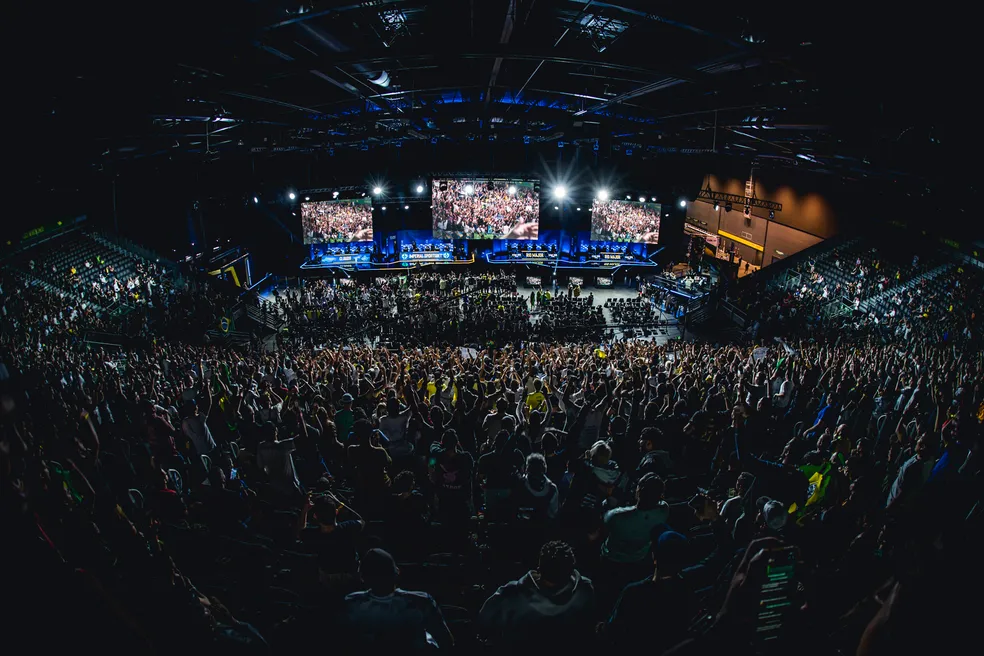

Sobre Nós
O CS:GO Brasileiro é uma comunidade dedicada a compartilhar informações sobre a história e os destaques do cenário brasileiro de Counter Strike Global Offensive.
Nossa equipe é formada por jogadores apaixonados pelo CS:GO e estamos comprometidos em trazer as últimas notícias, análises de partidas, entrevistas com jogadores e muito mais.
Explore nosso site para descobrir as equipes brasileiras mais icônicas, os jogadores de destaque e os eventos emocionantes que marcaram a história do CS:GO no Brasil.